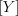
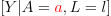
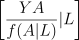
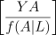
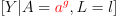
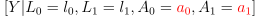

G-computation, IPTW, and EIF-based estimators for when:
The rule for assigning treatment does so with probability 1.
The rule for assigning treatment does not depend on past treatment or covariates.
LA|aYa
The joint density is:
| (1) |
After intervening on the exposure A, we have:
| (2) |
Thus, the expected value of the outcome Y is:
| 𝔼G | = ∑ yyfG(y) | (3) |
| = ∑ yy ∑ lfG(y,l) | (4) | |
| = ∑ y ∑ lyf(y|l,a)f(l) | (5) | |
| = ∑ l𔼠f(L = l). | (6) |
Algorithms One estimator of 𝔼G[Y ] is called parametric g-computation formula, and is based on an outcome model alone. For the simple case of a deterministic static intervention with one exposure and a single time point, the pseudo-algorithm reads as follows:
In the case of multiple exposures (e.g., if A is actually a vector of variables), the g-formula would remain the same 1 , but the pseudo-algorithm should be modified to take into account that the intervention rule now applies to all exposures a ∈ A.
A second estimator of 𝔼G[Y ] is based on modeling the exposure mechanism, rather than the outcome, and it is referred to as inverse probability of treatment weighting (IPTW) estimator. This can be derived nothing that the g-formula for 𝔼G[Y ] can be rewritten as follows:
| 𝔼G | = ∑ y ∑ lyf(y|l,a)f(l) | (7) |
| = ∑ y ∑ lyf(y,a|l) | (8) | |
| = ∑ l𝔼f(l) | (9) | |
| = 𝔼. | (10) |
The pseudo-algorithm for a binary exposure A reads as follows (for simplicity, we do not consider the censoring mechanism C here):
The rule for assigning treatment depends on past treatment or covariates.
LA|agYg
The joint density is:
| (11) |
After intervening on the exposure A, we have:
| (12) |
Thus, the expected value of the outcome Y is:
| 𝔼G | = ∑ yyfG(y) | (13) |
| = ∑ yy ∑ l ∑ agfG(y,l,ag) | (14) | |
| = ∑ y ∑ l ∑ agyf(y|l,ag)f(ag|l)f(l) | (15) | |
| = ∑ l ∑ ag𔼠f(ag|L = l)f(L = l). | (16) |
The rule for assigning treatment depends on its natural value.
LA−−→ag Yg
The joint density is:
| (17) |
After intervening on the exposure A, we have:
| (18) |
Thus, the expected value of the outcome Y is:
| 𝔼G | = ∑ yyfG(y) | (19) |
| = ∑ yy ∑ l ∑ a ∑ agfG(y,l,a,ag) | (20) | |
| = ∑ y ∑ l ∑ a ∑ agyf(y|l,ag)f(ag|l,a)f(a|l)f(l) | (21) | |
| = ∑ l ∑ a ∑ ag𔼠f(ag|a,L = l)f(a|l)f(L = l). | (22) |
Algorithms One estimator of 𝔼G[Y ] is the parametric g-computation formula. For the simple case of a deterministic intervention that depends on the natural value of a single exposure and a single time point, it suffices to notice that Equation 22 is equivalent to:
| 𝔼G | = ∑ l ∑ a ∑ ag𔼠f(ag,a,l). | (23) |
The pseudo-algorithm then reads as follows:
In the case of multiple exposures (e.g., if A is actually a vector of variables), the g-formula would remain the same 2 , but the pseudo-algorithm should be modified to take into account that the intervention rule now applies to all exposures a ∈ A.
The rule for assigning treatment does so with probability between 0 and 1.
The rule for assigning treatment does so with probability 1.
The rule for assigning treatment does not depend on past treatment or covariates.
If fint(ak|āk−1,k = 0) is either 0 or 1 for each āk and for k = 0,…,K. In particular, given the regime g = (g0,…,gK), fint(ak|āk−1g, k = 0) = 1 if ak = akg, and 0 otherwise, with a sg = g s(ās−1g).
L0A0|a0 L1 a0A 1a0|a 1Ya0,a1
The joint density is:
| f(y,l0,l1,a0,a1) = | f(y|l0,l1,a0,a1)× | (24) |
| f(a1|l0,l1,a0) × f(l1|l0,a0)× | (25) | |
| f(a0|l0) × f(l0). | (26) |
After intervening on the exposure A at both time points, we have:
| fG(y,l 0,l1,a0,a1) = | f(y|l0,l1,a0,a1)× | (27) |
| f(a1|l0,l1,a0) × f(l1|l0,a0)× | (28) | |
| f(a0|l0) × f(l0). | (29) |
Thus, the expected value of the outcome Y is:
| 𝔼G | = ∑ yyfG(y) | (30) |
| = ∑ yy ∑ l0 ∑ l1 ∑ a0 ∑ a1fG(y,l 0,l1,a0,a1) | (31) | |
| = ∑ l0 ∑ l1 ∑ a0 ∑ a1 𝔼 × f(a1|l0,l1,a0)× f(l1|l0,a0)× f(a0|l0)× f(l0). | (32) |
Algorithms One estimator of 𝔼G[Y ] is the parametric g-computation formula. For the case of a deterministic static intervention with one exposure and two time points, we can rewrite Equation 32 so that it corresponds to a series of conditional expectations:
| 𝔼G | = ∑ l0 ∑ l1 ∑ a0 ∑ a1 𔼠× f(a1|l0,l1,a0) × f(l1|l0,a0)× f(a0|l0) × f(l0) | (33) |
| = ∑ l0 ∑ l1 ∑ a0 ∑ a1 𔼠× f(a1,l1|l0,a0)× f(a0,l0). | (34) |
Equation 34 suggests a different form for the parametric g-computation formula, which in the literature is usually called iterated conditional expectation (ICE) g-computation formula. The pseudo-algorithm then reads as follows (Āt means the history of A up to time t):
In the case of more than two time points, simply repeat the steps above until reaching t = 0. The ICE g-computation formula is appealing because it does not require the specification of models for the confounders at each time point.
In the case of multiple exposures (e.g., if At is actually a vector of variables), the g-formula would remain the same 3 , but the pseudo-algorithm should be modified to take into account that the intervention rule now applies to all exposures at ∈ At.
The rule for assigning treatment depends on past treatment or covariates.
If fint(ak|k,āk−1,k = 0) is either 0 or 1 for each (āk,k) and for k = 0,…,K. In particular, given the regime g = (g0,…,gK), fint(ak|k,āk−1g, k = 0) = 1 if ak = akg, and 0 otherwise, with asg = g s(s,ās−1g).
The rule for assigning treatment depends on its natural value.
L0A0−−→A0 +gL 1A1−−→A1 +gY
The joint density is:
| f(y,l0,l1,a0,a0g,a 1,a1g) = | f(y|l 0,l1,a0g,a 1g)× | (35) |
| f(a1g|l 0,l1,a0g,a 1)× | (36) | |
| f(a1|l0,l1,a0g)× | (37) | |
| f(l1|l0,a0g)× | (38) | |
| f(a0g|l 0,a0)× | (39) | |
| f(a0|l0)f(l0). | (40) |
After intervening on the exposure A, we have:
| fG(y,l 0,l1,a0,a0g,a 1,a1g) = | f(y|l 0,l1,a0g,a 1g)× | (41) |
| f(a1g|l 0,l1,a0g,a 1)× | (42) | |
| f(a1|l0,l1,a0g)× | (43) | |
| f(l1|l0,a0g)× | (44) | |
| f(a0g|l 0,a0)× | (45) | |
| f(a0|l0)f(l0). | (46) |
Thus, the expected value of the outcome Y is:
The rule for assigning treatment does so with probability between 0 and 1.
The rule for assigning treatment does not depend on past covariates.
The rule for assigning treatment depends on past covariates.
The rule for assigning treatment depends on its natural value.